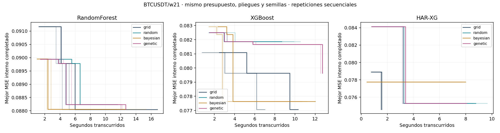
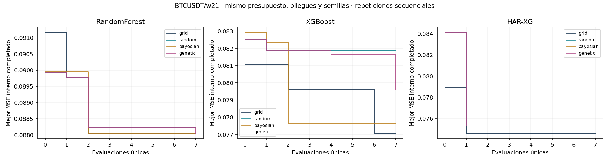

36 búsquedas nuevas: cuatro métodos, tres familias y tres repeticiones. BTCUSDT, ventana 21, tres bloques internos, ocho evaluaciones únicas y semillas de búsqueda/estimador 42. Cada búsqueda usa ajustes independientes. Las ejecuciones son secuenciales, con un hilo numérico. Los tiempos históricos concurrentes del experimento principal se excluyen.
La caché exacta HAR se limita a cada búsqueda; se registran ajustes efectivos. Las repeticiones con las mismas semillas miden variación del tiempo, sin crear tres muestras independientes de desempeño predictivo.
| family | method | repetitions | wall_mean_seconds | wall_sd_seconds | cpu_mean_seconds | cpu_sd_seconds | best_mse_mean | best_mse_sd | evaluations_per_run | inner_fits_per_run | wall_mean_seconds_grid | best_mse_mean_grid | wall_speedup_vs_grid | inner_mse_change_vs_grid_percent |
|---|---|---|---|---|---|---|---|---|---|---|---|---|---|---|
| HAR-XG | bayesian | 3 | 7,90131 | 0,158764 | 7,89062 | 0,16313 | 0,077765 | 0 | 8 | 33 | 1,53241 | 0,0745944 | 0,193944 | 4,25042 |
| HAR-XG | genetic | 3 | 7,9757 | 0,0921891 | 7,97396 | 0,090211 | 0,0753055 | 0 | 8 | 36 | 1,53241 | 0,0745944 | 0,192135 | 0,953224 |
| HAR-XG | grid | 3 | 1,53241 | 0,0306411 | 1,53125 | 0,03125 | 0,0745944 | 0 | 8 | 12 | 1,53241 | 0,0745944 | 1 | 0 |
| HAR-XG | random | 3 | 8,97636 | 0,589746 | 8,95833 | 0,599547 | 0,0753055 | 0 | 8 | 30 | 1,53241 | 0,0745944 | 0,170716 | 0,953224 |
| RandomForest | bayesian | 3 | 13,5334 | 1,55355 | 13,4115 | 1,56954 | 0,0880609 | 0 | 8 | 24 | 12,9161 | 0,0880484 | 0,954389 | 0,0141616 |
| RandomForest | genetic | 3 | 12,2687 | 0,348542 | 12,2135 | 0,268974 | 0,0880484 | 0 | 8 | 24 | 12,9161 | 0,0880484 | 1,05276 | 0 |
| RandomForest | grid | 3 | 12,9161 | 3,41864 | 12,8646 | 3,3385 | 0,0880484 | 0 | 8 | 24 | 12,9161 | 0,0880484 | 1 | 0 |
| RandomForest | random | 3 | 10,6594 | 0,955683 | 10,625 | 0,926103 | 0,0882337 | 0 | 8 | 24 | 12,9161 | 0,0880484 | 1,21171 | 0,210458 |
| XGBoost | bayesian | 3 | 11,2873 | 0,687376 | 11,2865 | 0,691278 | 0,0776463 | 0 | 8 | 24 | 8,10971 | 0,0770696 | 0,718484 | 0,748276 |
| XGBoost | genetic | 3 | 12,6513 | 0,110319 | 12,6302 | 0,0992321 | 0,0796372 | 0 | 8 | 24 | 8,10971 | 0,0770696 | 0,641017 | 3,33153 |
| XGBoost | grid | 3 | 8,10971 | 1,90199 | 8,00521 | 1,71429 | 0,0770696 | 0 | 8 | 24 | 8,10971 | 0,0770696 | 1 | 0 |
| XGBoost | random | 3 | 9,70007 | 0,939096 | 9,69271 | 0,937674 | 0,0818579 | 0 | 8 | 24 | 8,10971 | 0,0770696 | 0,836047 | 6,21286 |
Una razón de tiempo mayor que uno indica menor tiempo del método; un cambio de MSE negativo indica menor pérdida interna. Error y costo se reportan por separado: dividir MSE entre segundos favorecería artificialmente a una búsqueda lenta.


Cada línea corresponde a una repetición. No se atribuye un resultado antes de terminar su primera evaluación. El eje de calidad utiliza validación interna; la generalización se evalúa separadamente con los bloques externos.
El plazo descriptivo por familia es la ejecución completa más corta de sus doce búsquedas. Esta regla sólo utiliza tiempos. Si una búsqueda todavía no terminó su primera evaluación, el MSE queda ausente.
| family | method | deadline_seconds | completed_evaluations_mean | incumbent_mse_mean | evaluable_repetitions |
|---|---|---|---|---|---|
| HAR-XG | bayesian | 1,50241 | 1 | 0,077765 | 3 |
| HAR-XG | genetic | 1,50241 | 1 | 0,0841343 | 3 |
| HAR-XG | grid | 1,50241 | 3,33333 | 0,0774628 | 3 |
| HAR-XG | random | 1,50241 | 1 | 0,0841343 | 3 |
| RandomForest | bayesian | 9,64202 | 5,33333 | 0,0880609 | 3 |
| RandomForest | genetic | 9,64202 | 5,66667 | 0,0882337 | 3 |
| RandomForest | grid | 9,64202 | 5,33333 | 0,0880484 | 3 |
| RandomForest | random | 9,64202 | 7 | 0,0882337 | 3 |
| XGBoost | bayesian | 6,98682 | 3 | 0,0776463 | 3 |
| XGBoost | genetic | 6,98682 | 6 | 0,0816669 | 3 |
| XGBoost | grid | 6,98682 | 6 | 0,0779255 | 3 |
| XGBoost | random | 6,98682 | 5,66667 | 0,0818579 | 3 |
Grid es un prefijo cartesiano acotado; TPE/Genético tienen pocas iteraciones adaptativas. Los resultados no demuestran superioridad universal. No se obliga a que Bayes o Genético ganen. No se generan pronósticos 2025/2026 ni se cambia ningún modelo principal.
Costos por ejecución · Evaluaciones individuales · Resumen por método · Resultados al plazo común · Protocolo